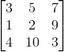
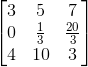
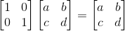

假定有一个矩阵U：

那A可以通过一个矩阵乘法转换成矩阵U:

我们可以按照上一章节的思想，通过考虑行的变化来构造转换矩阵，已知矩阵U的第二行是原先的第二行减去第一行的1/3，那么想要转换回去的话只要第二行加上第一行的1/3不就可以了，这时就可以构造出一个转换矩阵：
容易验证：
现在问题来了，这个让矩阵U转换回去的矩阵有什么意义呢？我们先来回顾下单位矩阵：

已知矩阵有乘法结合律（注意：矩阵没有乘法交换律！），让矩阵A变成矩阵U的式子左右分别左乘刚刚那个转换矩阵:
那么可以得到下式：
这时我们可以说上面两个矩阵互为逆矩阵。我们先来看下逆矩阵的定义，维基百科上说道：
定义里提到了只有n*n的矩阵才有可能存在逆矩阵，但可能也不存在，那什么情况下存在，什么情况下不存在呢？
我们先来看下不存在的情况，假定有矩阵X：
这个矩阵不存在逆矩阵，为什么，我们可以利用之间讲过的列空间来看这个问题，假定这个矩阵存在逆矩阵，那么：
红框圈出的地方代表第一个矩阵与第二个矩阵的第一列运算后得到结果矩阵的第一列，那么这时可以用列空间拆成这种形式：
通过之前分析可以得知由于其列空间为一条直线且不经过（1,0），所以无解。所以不存在逆矩阵。
我们还可以从另一方面来分析，因为存在一个矩阵乘法让矩阵X变成0矩阵（除了乘上0矩阵）：
那么这肯定不存在逆矩阵，因为如果存在逆矩阵的话，左右乘上该逆矩阵，结果并不符合：
也即是说，如果存在AX=0的情况，那么A肯定不存在逆矩阵。同时，我们也可以说如果矩阵A零空间维数为0，那么矩阵A肯定存在逆矩阵。对于零空间的定义，可看之后的章节AX=0？。
了解了逆矩阵的存在性质后，我们再来看如何求出逆矩阵。可以跟之前类似用转换矩阵的思想来求逆矩阵，但要是遇到复杂的矩阵就靠不住了。所以有一种通用的方法，称为“高斯-若尔当消元法”(Gauss-Jordan Elimination)。
我们来看一个例子，矩阵A：
易得矩阵A有逆矩阵，通过AX=I：
我们首先将矩阵A变成（A|I）类型的增广矩阵：
然后用消元法把该矩阵A变成单位矩阵
这时增广矩阵里右边的矩阵就是矩阵A的逆矩阵，可以验证：
其原理如下，假定有一转换矩阵E：
易得EA=I，EI=X，那么E（或者X）就是A的逆矩阵。
最后，我们再来考虑下矩阵AB的逆是多少：
显然，如果是求多个矩阵的逆，那么要颠倒矩阵的顺序。那么，矩阵的转置（行列交换）的逆是多少呢？
显然，矩阵转置的逆是矩阵的逆的转置。好了，矩阵的逆就讲到这里，下一章节讲下PA=LU？